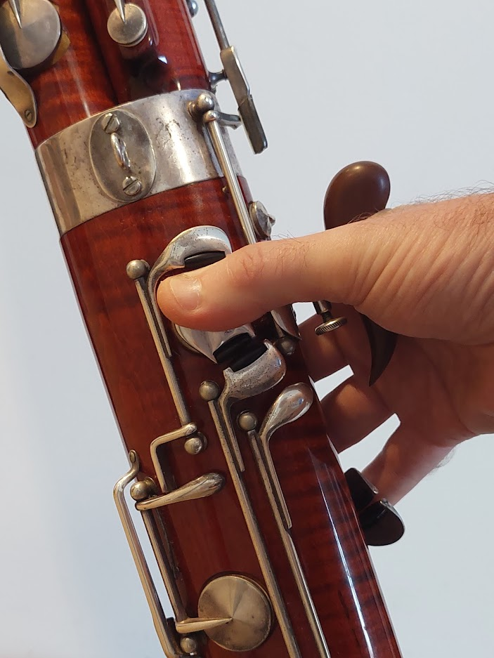
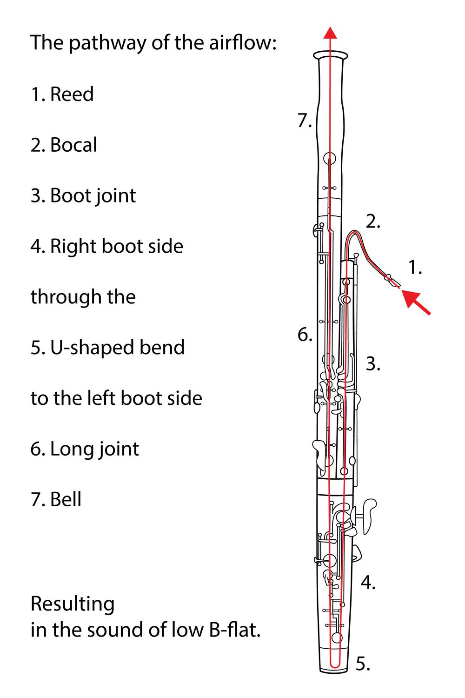

Set Up and Care
Setting Up Your Bassoon
The bassoon has six parts: the boot joint, wing joint, bass joint, bell, bocal, and reed. To protect the instrument and to transport it, the parts are separated and put into an instrument case.
- Place your reed in some water and let it soak while you assemble the bassoon.
- When grabbing the bassoon, make sure to avoid grabbing the rods and keys (you can bend them).
- Take the boot and wing joint. Insert the cork end of the wing joint into the smaller hole in the boot joint (may have to twist it).
- Line up the keys on the wing joint with the keys on the boot joint.
- Take the lon joint and place the cork end into the other hole in the boot joint. Make sure that the area with no keys or rods is aligned with the curvature of the wing joint.
- Line up the thumb keys on the back of the instrument.
- If your bassoon has a locking mechanism to lock the wing joint and long joint together lock it now.
- Take the bell and put it onto the remaining cork end of the long joint. Make sure the key/rod lines up.
- place the seat strap under your thighs, with the end that connects to the boot joint hanging off your right side.
- Attach the seat strap to the bottom of the boot joint.
- The bocal is easily bent/damaged, so be carfeul and grab it by the curvature closest to the cork end.
- Take the bocal and insert the cork end into the receiver on the wing joint, ensuring it does not catch on the whisper key pad.
- Take the reed out of the water and place it onto the end of the bocal with the flat part horizontal.
- Adjust the seat strap so the reed is even with your mouth and your head does not have to move up or down to get the reed in your mouth.
Holding the Bassoon
The bassoon can be played in a chair or standing. Either way it is held diagonally in front of the player. Because it is so heavy, the player needs additional support in order to hold it. The most common forms of support are a seat strap, neck strap, or harness. When sitting down, a seat strap is layed acroos the length of the chair under your legs and attached to the boot joint. While standing , players can use a neck strap or harness to hold the bassoon. Some people find a neck strap puts too much strain on their neck and so opt for a harness that distributes the wieght more evenly across the torso. There are many different kinds of harnesses, and choosing one you want requires a bit of research and some trial and error. Some players choose to use a neck strap or harness while sitting as well, though this is not as common. Because the bassoon is held diagonally, the neck strap or harness tends to be pulled to the side, putting more weight on one side. Many use a balance hanger to fix this issue. A balance hanger is installed between the instrument and the strap/harness and shifts the center of gravity to the center rather then the right. To play, your left hand controls the holes and buttons in the upper half of the instrument while your right hand controls the bottom portion. See pictures below.
Sometimes people use a crutch (or hand rest) to stabilize the right hand. The crutch mounts to the boot joint and secured using a thumb screw. Crutches also help keep your right hand in the proper position.
Cleaning
Cleaning your wind instrument is vital to get rid of spit and prevent mold from growing (this is more of a concern with wooden bassoons than plastic ones, but it is still important to clean it!). The bassoon has six parts, but only two need to be cleaned: the boot joint and the wing joint. To clean the joints, you need a cleaning rag. This usually comes in the case but can also be bought online or in a local music store. This is because air travels through the bassoon like this:
- Drop the string through the hole of the wing joint (3) and grab it where it comes out the other side. Pull the string to pull the rag through. Do this twice.
- Drop the string into one of the holes of the boot joint (4), then shake the joint until the string falls down the other hole. Grab the string and pull the rag through.
- Spit pools at the bottom, so cleaning the bass joint (5) and bell (6) is not necessary.
- Make sure not to leave the cleaning rags inside the joints!